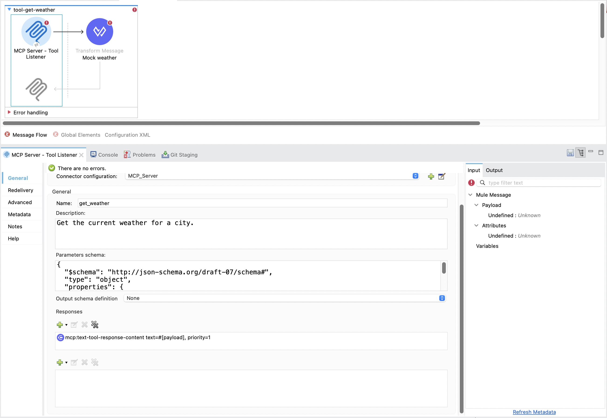
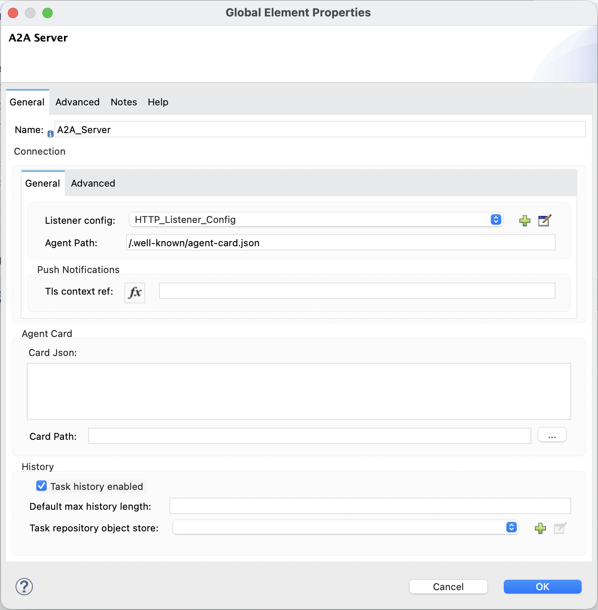
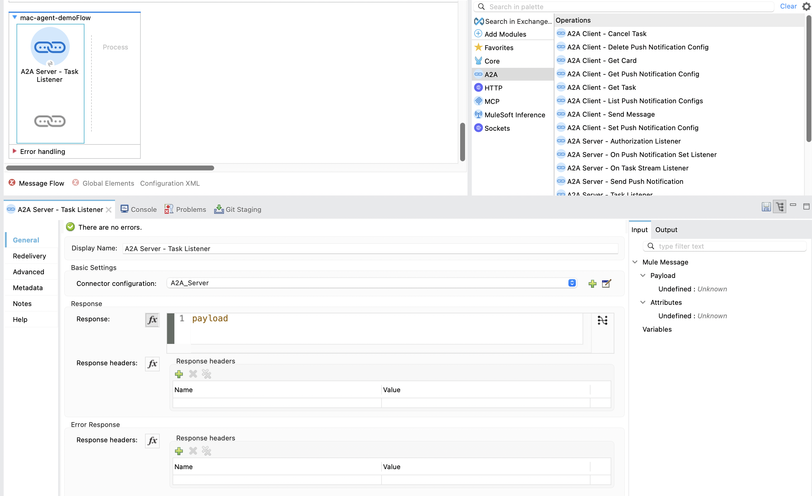

Lesson 48 · Agent interoperability · MuleSoft
You built both protocols by hand in Python (L45–47). Now the mirror image: expose an MCP server and an A2A agent as Mule flows in Anypoint Studio — using the MCP Connector and A2A Connector — then call each from the same Python clients you already wrote. Studio-first walkthrough with screenshot slots you capture.
<mcp:tool-listener> exposes a flow as an MCP tool (call it from your L46 client). The A2A Connector's <a2a:task-listener> exposes a flow as an A2A agent with an Agent Card (call it from your L47 client). Same primitives you coded in Python — now declared in a flow, with Anypoint auth/governance for free.
com.mulesoft.connectors:mule4-a2a-connector, published 2026-03-20). Operation and listener names below are verified against Anypoint Exchange and docs.mulesoft.com, but the deep Studio dialog layouts (exact Agent Card field positions) shift between releases and some doc pages were incomplete at capture time. The screenshots you capture are authoritative for the version you install — treat the slots as "confirm against your Studio," and verify operation names on Exchange before wiring a customer flow.
mcp_http_client.py) + L47 (a2a_client.py) Python clients from earlier lessons..venv active — you'll reuse those clients to call the Mule endpoints.Everything you hand-coded has a direct connector equivalent. Learn the mapping and the whole lesson is "the same thing, declared":
| You wrote in Python… | MuleSoft connector equivalent |
|---|---|
L46: FastMCP server + a tool function | MCP Connector · <mcp:tool-listener> — a flow becomes the tool |
L47: AgentCard(...) in code | A2A Connector · Agent Card via Card Json or Card Path |
L47: FxExecutor.execute() drives the task | A2A Connector · <a2a:task-listener> — the flow IS the executor |
L47 client: create_from_url() | <a2a:get-card> — fetch a remote agent's card |
L47 client: send_message() (streaming) | <a2a:send-message> / <a2a:send-stream-message> |
The MCP Connector runs in two modes — server (expose your flow as MCP tools) and client (call a remote MCP server). We want server mode, over Streamable HTTP — exactly the transport your L46 client speaks.
agent-endpoints-demo.mcp, add MCP Connector, Finish.<mcp:tool-listener> — the flow's logic becomes the tool body.list_tools().8081, path /mcp).
lessons/img/l48/01-mcp-tool-listener.png. Confirm the exact field labels against your installed connector version.mcp_http_client.py at http://localhost:8081/mcp instead of the Python server. The client shouldn't care that the server is now a Mule flow — that's the whole promise of an open protocol. If list_tools() shows your tool and a call returns the result, the MuleSoft MCP server works.
Now the agent-to-agent half. The A2A Connector also has server and client connection types. Server mode makes your flow a discoverable agent — the direct analog of your L47 a2a_server.py.
a2a, add A2A Connector, Finish.<a2a:task-listener> — incoming delegated tasks land here (like FxExecutor.execute() receiving a task).AgentCard(...) — name, description, skills, URL — as declared config.8082). The card is then served for discovery, the connector's equivalent of L47's /.well-known/agent-card.json.TaskUpdater).
lessons/img/l48/02-a2a-agent-card.png.
lessons/img/l48/03-a2a-task-listener-flow.png.a2a_client.py's BASE at your Mule agent (e.g. http://localhost:8082). create_from_url() fetches the Mule-served card; send_message() delegates the task. You should see the same lifecycle lines you saw in L47 — this time driven by a Mule flow. Reuse the Role.ROLE_USER fix you already made.
You've used Python as the client so far, but a Mule flow can be the caller too — one Mule agent delegating to another. That's the A2A Connector's client operations:
| Operation | What it does | L47 Python analog |
|---|---|---|
<a2a:get-card> | Fetch a remote agent's card (discovery) | create_from_url() |
<a2a:send-message> | Send a message/task, get the response | send_message() |
<a2a:send-stream-message> | Send + stream status/artifacts over SSE | the streaming async for loop |
<a2a:task-resubscribe> | Reconnect to an in-flight task's stream after a drop | (no L47 equivalent — production nicety) |
| Get Task / Cancel Task | Lifecycle control on an existing task | TaskState checks / cancel |
So a MuleSoft agent can be discovered and discover others — full participant in the A2A mesh, not just a server.
"Your customer already has the integration estate — APIs, connectors, governance. These two connectors mean they don't stand up a separate Python service to join the agent world: an existing Mule flow becomes an MCP tool or an A2A agent with a listener and a config, inheriting Anypoint's auth, policies, and monitoring. And because it's the open protocols, their Mule agents interoperate with Agentforce, LangGraph, or anyone else's agents. That's the MuleSoft pitch in one line — you don't rebuild for agents, you expose what you already have, governed."
<mcp:tool-listener> → MCP tool; <a2a:task-listener> → A2A agent. Different connectors, same "flow-as-endpoint" idea.AgentCard(...) in Python. Where does that live in the MuleSoft A2A agent?
<a2a:send-message> to delegate to the agent you built in Part 3.